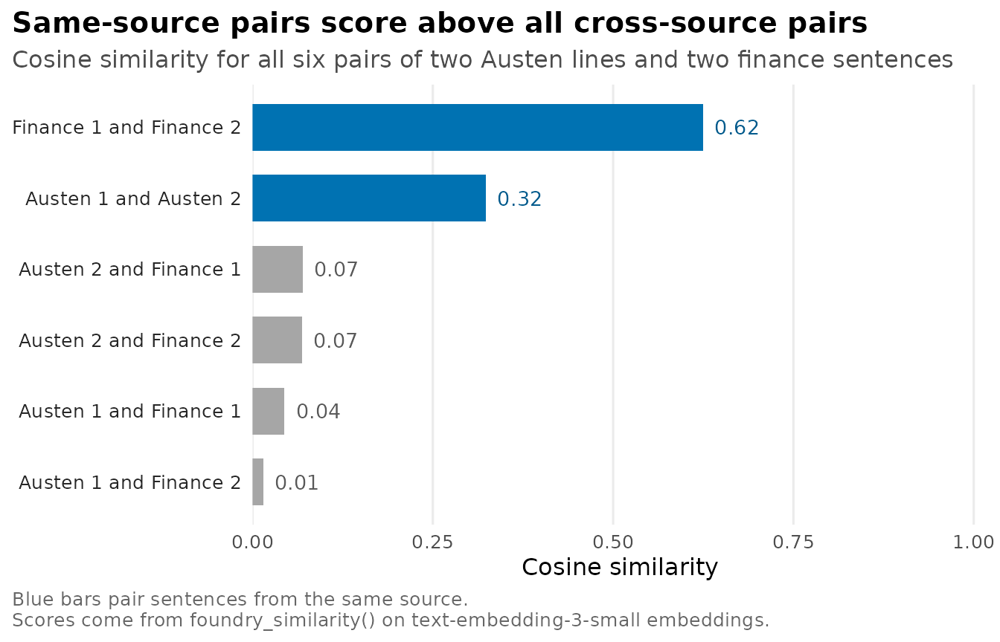
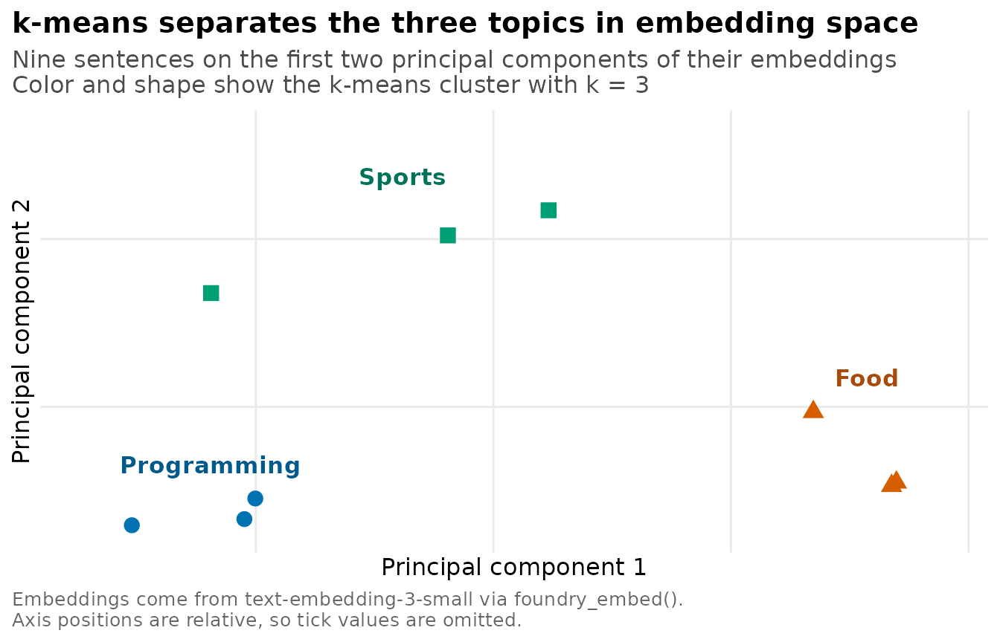

Calls to Azure show output recorded from a live run, and setup code is shown but not run.
What embeddings are for
Embeddings are numeric vectors that represent text. Texts with similar meanings tend to have vectors that point in similar directions, so cosine similarity becomes a useful way to compare responses, documents, or queries.
Use embeddings when you need to find related documents by meaning, measure similarity between texts, cluster open-ended responses, detect near duplicates, or turn text into numeric predictors for a model. Keyword matching still has value when exact terms matter. Embeddings help when two texts use different wording for a similar idea, such as “automobile” and “car”.
Generate embeddings
foundry_embed() returns one row per input text. The
embedding column is a list-column of numeric vectors, and
n_dims reports the length of each vector. Metadata columns
keep the original input index, row-level errors, error messages, and
per-row response metadata.
austen_lines <- c(
"It is a truth universally acknowledged, that a single man in possession of a good fortune, must be in want of a wife.",
"However little known the feelings or views of such a man may be on his first entering a neighbourhood.",
"Mr. Bennet was so odd a mixture of quick parts, sarcastic humour, reserve, and caprice."
)
embedding <- foundry_embed(austen_lines[1], model = "text-embedding-3-small")
embedding[, c("text", "n_dims", ".input_idx", ".error", ".error_msg")]
#> # A tibble: 1 × 5
#> text n_dims .input_idx .error .error_msg
#> <chr> <int> <int> <lgl> <chr>
#> 1 It is a truth universally acknowledged, t… 1536 1 FALSE NAPass a character vector to embed several texts in one request.
doc_embeddings <- foundry_embed(austen_lines, model = "text-embedding-3-small")
doc_embeddings[, c("text", "n_dims", ".input_idx", ".error")]
#> # A tibble: 3 × 4
#> text n_dims .input_idx .error
#> <chr> <int> <int> <lgl>
#> 1 It is a truth universally acknowledged, that a singl… 1536 1 FALSE
#> 2 However little known the feelings or views of such a… 1536 2 FALSE
#> 3 Mr. Bennet was so odd a mixture of quick parts, sarc… 1536 3 FALSESome embedding deployments can return shorter vectors. That can reduce storage and speed up comparisons, with some loss of detail.
compact <- foundry_embed(
austen_lines[1],
model = "text-embedding-3-small",
dimensions = 256
)
compact[, c("text", "n_dims")]
#> # A tibble: 1 × 2
#> text n_dims
#> <chr> <int>
#> 1 It is a truth universally acknowledged, that a single man in possessio… 256Compare same-source and cross-source pairs
foundry_similarity() computes pairwise cosine similarity
for a tibble with an embedding list-column. The next
example mixes two Austen-style lines with two finance sentences, so the
useful check is whether same-source pairs score above cross-source
pairs.
mixed <- c(
"It is a truth universally acknowledged, that a single man in possession of a good fortune, must be in want of a wife.",
"Mr. Bennet was so odd a mixture of quick parts, sarcastic humour, reserve, and caprice.",
"The quarterly revenue report showed a sharp rise in cloud subscriptions.",
"Analysts raised their earnings forecast after the strong cloud numbers."
)
similarities <- foundry_embed(mixed, model = "text-embedding-3-small") |>
foundry_similarity()
similarities
#> # A tibble: 6 × 3
#> text_1 text_2 similarity
#> <chr> <chr> <dbl>
#> 1 The quarterly revenue report showed a sharp rise in cloud s… Analy… 0.625
#> 2 It is a truth universally acknowledged, that a single man i… Mr. B… 0.324
#> 3 Mr. Bennet was so odd a mixture of quick parts, sarcastic h… The q… 0.0692
#> 4 Mr. Bennet was so odd a mixture of quick parts, sarcastic h… Analy… 0.0684
#> 5 It is a truth universally acknowledged, that a single man i… The q… 0.0444
#> 6 It is a truth universally acknowledged, that a single man i… Analy… 0.0146In this recording the two finance sentences score 0.62 and the two Austen lines 0.32, while no cross-source pair scores above 0.07. The Austen lines have no content words in common, so their score comes from meaning and style rather than shared vocabulary.

Rank documents for a query
For a query-versus-corpus comparison, combine the query and documents
in one embedding tibble, compute pairwise similarities, and keep the
rows that include the query label. This uses
foundry_similarity() for the cosine calculation and only a
small amount of reshaping to return document text.
documents <- c(
"How to install R packages using install.packages()",
"Data visualization with ggplot2 in R",
"Introduction to machine learning with Python",
"Statistical hypothesis testing explained",
"Building web applications with Shiny",
"Deep learning with TensorFlow and Keras"
)
query <- "How do I create charts and graphs in R?"
search_embeddings <- foundry_embed_batch(
c(query, documents),
model = "text-embedding-3-small",
batch_size = 4,
max_active = 2
) |>
mutate(label = c("query", paste0("doc_", seq_along(documents))))
search_pairs <- foundry_similarity(search_embeddings, text_col = "label")
search_pairs |>
filter(text_1 == "query" | text_2 == "query") |>
mutate(
label = if_else(text_1 == "query", text_2, text_1),
text = documents[match(label, paste0("doc_", seq_along(documents)))]
) |>
select(text, similarity) |>
arrange(desc(similarity)) |>
slice_head(n = 3)
#> # A tibble: 3 × 2
#> text similarity
#> <chr> <dbl>
#> 1 Data visualization with ggplot2 in R 0.668
#> 2 How to install R packages using install.packages() 0.458
#> 3 Building web applications with Shiny 0.377Cluster text responses
Embeddings also work as features for local methods such as
stats::kmeans(). The example groups a mix of programming,
food, and sports sentences without using the topic labels.
texts <- c(
"Python is great for machine learning",
"R excels at statistical analysis",
"JavaScript powers modern web applications",
"Italian pasta with tomato sauce",
"Sushi is a popular Japanese dish",
"French croissants are flaky and buttery",
"Soccer is the world's most popular sport",
"Basketball requires speed and agility",
"Tennis matches can last for hours"
)
cluster_embeddings <- foundry_embed(texts, model = "text-embedding-3-small")
embedding_matrix <- do.call(rbind, cluster_embeddings$embedding)
set.seed(42)
clusters <- kmeans(embedding_matrix, centers = 3, nstart = 10)
cluster_embeddings |>
mutate(cluster = clusters$cluster) |>
select(text, cluster) |>
arrange(cluster)
#> # A tibble: 9 × 2
#> text cluster
#> <chr> <int>
#> 1 Python is great for machine learning 1
#> 2 R excels at statistical analysis 1
#> 3 JavaScript powers modern web applications 1
#> 4 Italian pasta with tomato sauce 2
#> 5 Sushi is a popular Japanese dish 2
#> 6 French croissants are flaky and buttery 2
#> 7 Soccer is the world's most popular sport 3
#> 8 Basketball requires speed and agility 3
#> 9 Tennis matches can last for hours 3
The cluster assignments are an inspection tool, not proof that the labels are correct. Review the text in each cluster before using the groups as measurements.
Work with larger collections
Use foundry_embed_batch() when you have many texts. It
accepts batch_size and max_active, returns the
same embedding list-column shape, and records row-level errors instead
of stopping the whole job for one failed text.
many_texts <- c(
"The login page rejects my password reset link.",
"The invoice total does not match the purchase order.",
"The chart export button is missing from the report.",
"The password reset email arrived after it expired.",
"The billing address changed but the invoice did not update.",
"The dashboard chart uses the wrong date range."
)
many_embeddings <- foundry_embed_batch(
many_texts,
model = "text-embedding-3-small",
batch_size = 3,
max_active = 2
)
many_embeddings[, c("text", "n_dims", ".error", ".error_msg")]
#> # A tibble: 6 × 4
#> text n_dims .error .error_msg
#> <chr> <int> <lgl> <chr>
#> 1 The login page rejects my password reset link. 1536 FALSE NA
#> 2 The invoice total does not match the purchase order. 1536 FALSE NA
#> 3 The chart export button is missing from the report. 1536 FALSE NA
#> 4 The password reset email arrived after it expired. 1536 FALSE NA
#> 5 The billing address changed but the invoice did not … 1536 FALSE NA
#> 6 The dashboard chart uses the wrong date range. 1536 FALSE NAFor production use, store embeddings instead of regenerating them, keep the model and dimension settings with the stored data, and use approximate-nearest-neighbor indexes when a full pairwise comparison is too slow.